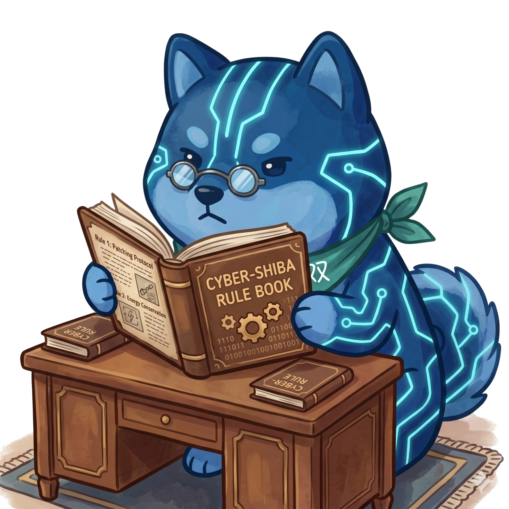

01
Bias for Action
Prioritize speed, calculated risk-taking, and rapid execution. Most decisions are reversible, so favor action over analysis paralysis.
We run on five core principles: move fast on reversible choices, treat the business like you own it, think bold to stand out, speak up with solutions, and when debate stalls, vote to unblock and execute with 100% commitment.

Prioritize speed, calculated risk-taking, and rapid execution. Most decisions are reversible, so favor action over analysis paralysis.
Make decisions based on long-term value creation rather than short-term gains, treating the company like true owners rather than short-sighted tenants.
Stand out from the competition by embracing bold, unconventional thinking. Being different goes beyond taking risks: we actively encourage crazy ideas that challenge the status quo.
Challenge ideas openly, but always pair criticism with a suggested fix or next step. Complaints without solutions drain energy, while constructive feedback builds momentum.
Debate hard, but never get stuck. When a decision is genuinely deadlocked, we take a vote to break the stalemate and move on. Once locked, the whole team commits 100% to execution.